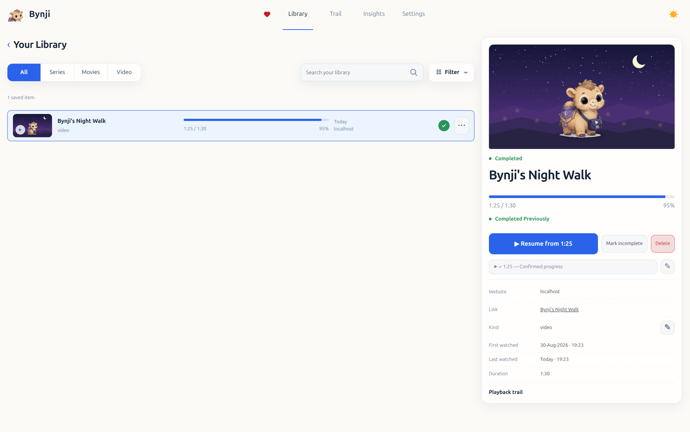
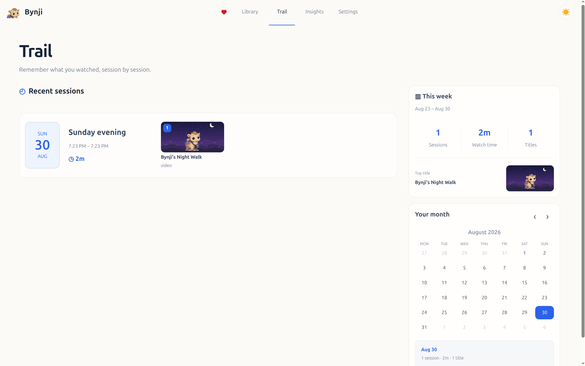
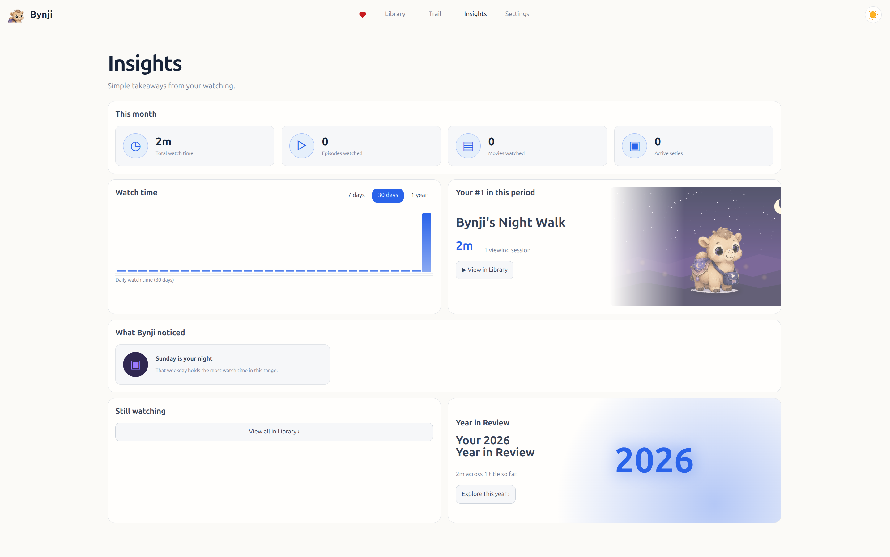

Resume naturally
Return after a refresh, a closed tab, or on another compatible website and continue from a confirmed position.
Private by design · No ads
Bynji remembers meaningful video progress and viewing history as you watch across the web—then helps you continue where you stopped.
Return after a refresh, a closed tab, or on another compatible website and continue from a confirmed position.
Movies, series, episodes and videos stay organized while you watch normally.
Look back at viewing sessions and understand how your watching progressed over time.
Simple, private watch-time summaries without an account, ads, or behavioral profiling.
Built to stay out of the way
Bynji waits for meaningful playback, keeps uncertain media separate, and gives you direct control over completion, corrections, exports and deletion.



Three simple steps
Complete the one-time setup for appearance, Resume and subtitles.
Bynji recognizes meaningful playback on standard web players.
Resume from a confirmed saved position or explore your private Library.
Compatibility
Bynji works with standard web video players in current Chromium browsers on Windows, macOS and Linux. Website and player behavior varies, so compatibility is continuously improved without relying on a fixed list of supported sites.